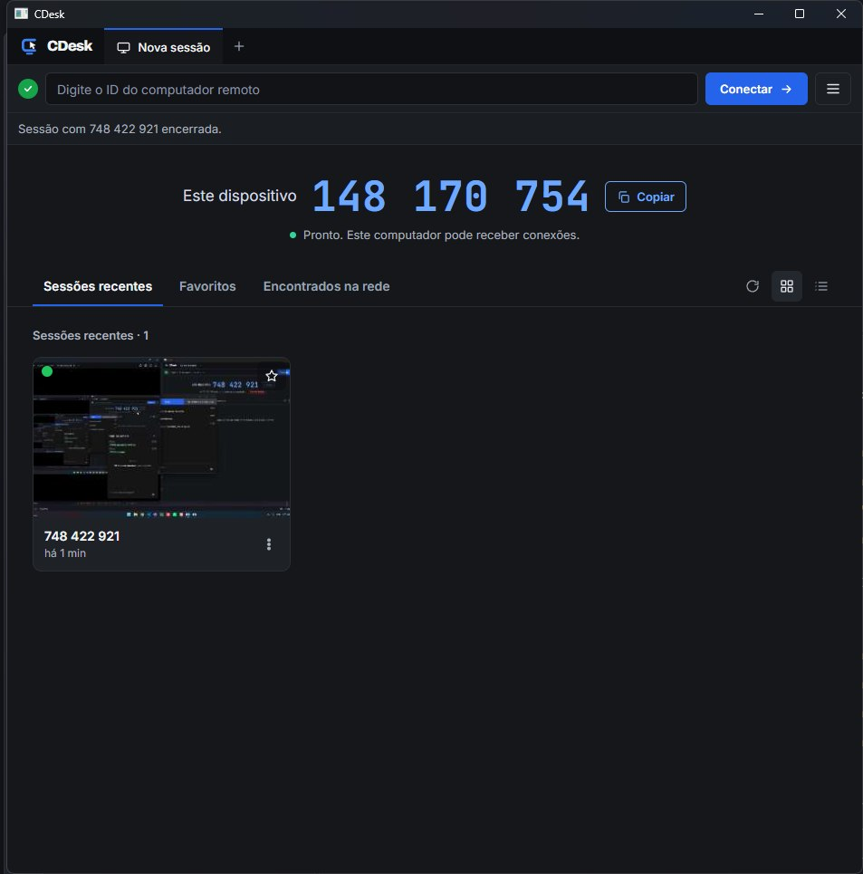
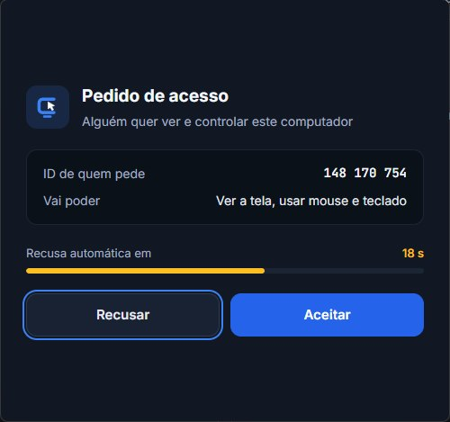
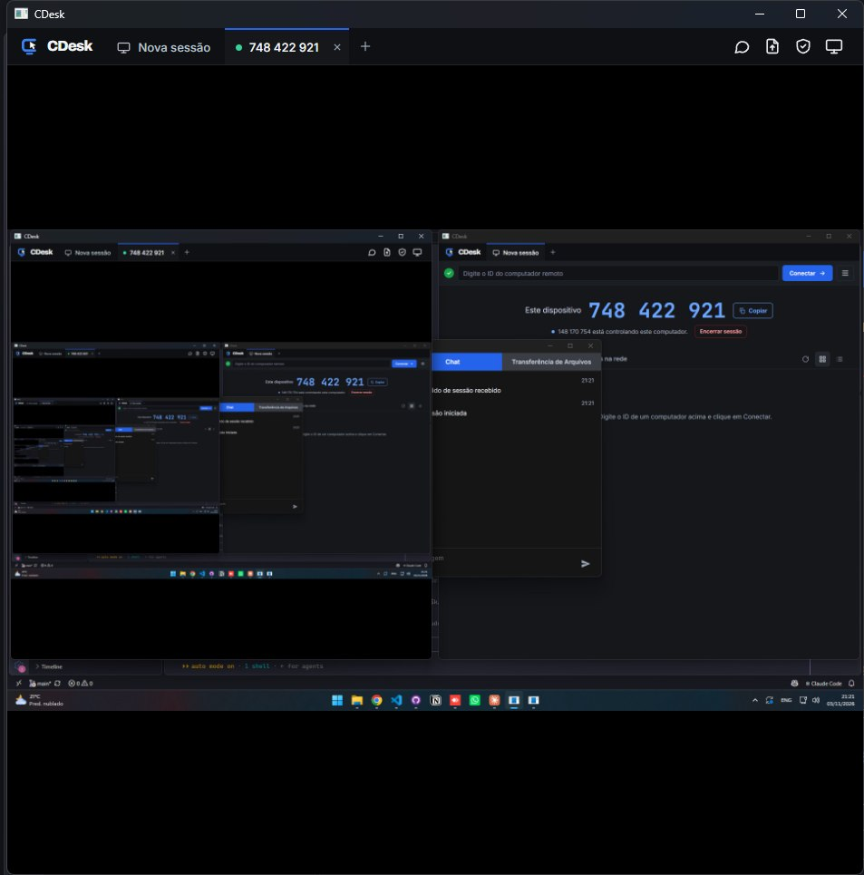
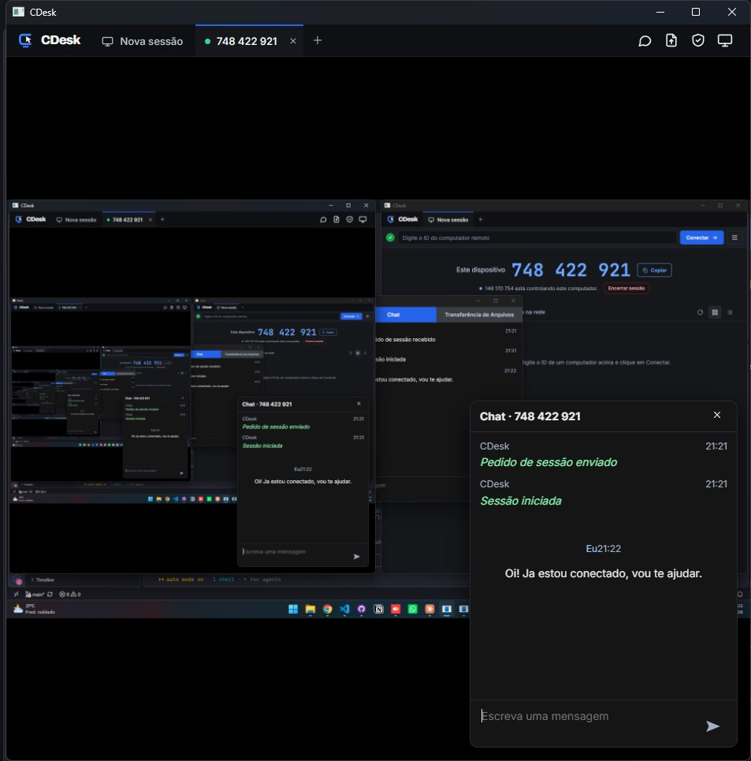
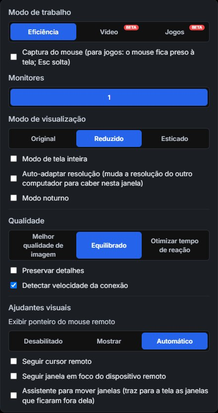
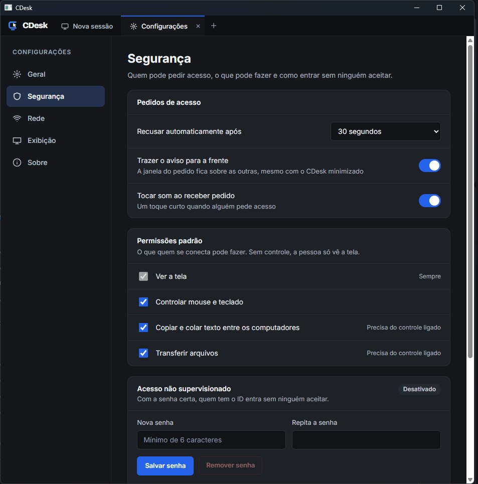
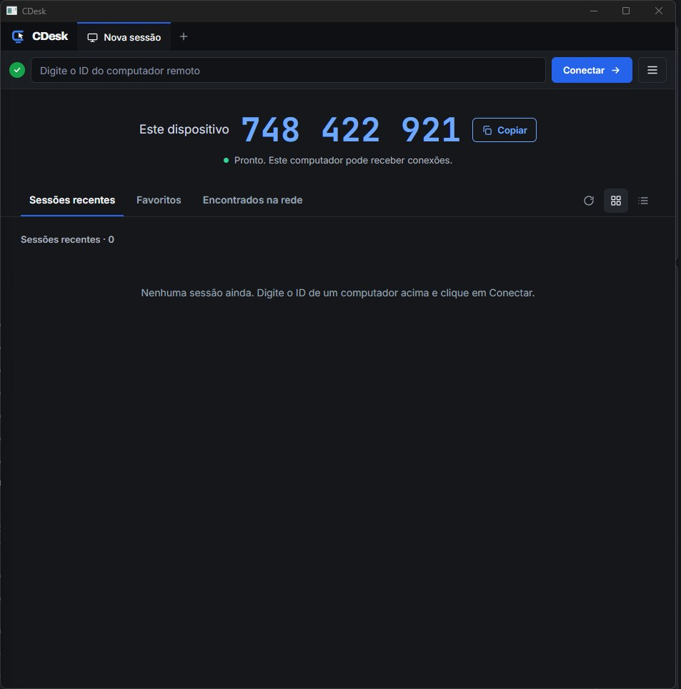

O CDesk conecta dois computadores direto entre si (P2P), com conexão criptografada. Sem conta, sem cadastro, sem servidor no meio. Um único executável.
Cada instalação do CDesk é ao mesmo tempo quem compartilha e quem controla.
Permanente, calculado a partir da chave do computador. Ex.: 610 104 309.
Os computadores se acham pela rede P2P (DHT) e pela rede local (mDNS) e conectam direto.
Toda a conexão entre os computadores é criptografada de ponta a ponta.
Janela própria, sempre à frente, com Aceitar, Recusar e contagem regressiva.
Defina uma senha e entre sem ninguém precisar aceitar. Senhas lembradas ficam protegidas pelo Windows.
Controle várias máquinas ao mesmo tempo, cada uma na sua aba.
Botões numerados no topo escolhem qual monitor do outro computador ver.
Ctrl+C num computador, Ctrl+V no outro. Texto e arquivos.
ç, ã, é saem certos mesmo com teclados diferentes. Atalhos e F1–F12 também.
A qualidade se ajusta à velocidade da conexão e nada é enviado com a tela parada.
Fechar a janela esconde o CDesk na bandeja, onde ele continua recebendo conexões.
Opcional: abre direto na bandeja, pronto para receber acesso.
Capturas do app rodando, sem montagem. Clique para ver em tamanho real.

Tela inicialSeu ID, o campo para conectar e o histórico.
Pedido de acessoAceitar ou recusar, com contagem regressiva.
Sessão remotaA tela do outro computador, numa aba.
Chat na sessãoConverse com quem está do outro lado.
ExibiçãoModo de trabalho, monitor, qualidade e ajustes.
SegurançaPermissões e senha de acesso não supervisionado.Não tem instalador, nem conta, nem cadastro. É um único arquivo CDesk.exe. Faça isso nos dois computadores.
Clique em Baixar para Windows. O arquivo vem da página de versões do projeto no GitHub.
Dê dois cliques em CDesk.exe. Se o Windows SmartScreen avisar, clique em Mais informações → Executar assim mesmo.
Na primeira execução, o Windows pergunta se libera o CDesk. Marque redes privadas e públicas e clique em Permitir.
Quando aparecer “Pronto. Este computador pode receber conexões.”, está tudo certo.
# instale o Wails $ go install github.com/wailsapp/wails/v2/cmd/wails@latest # clone e compile $ git clone https://github.com/carloseduardolsouza/CDesk.git $ cd CDesk && wails build # o executável sai em build/bin/CDesk.exe
Clique num passo para ver o que acontece.
Espere a faixa ficar azul: “Pronto. Este computador pode receber conexões.”
No computador que será controlado, o ID de 9 números aparece em Este dispositivo.
No seu computador, digite o ID em ID do computador remoto e clique em Conectar. A primeira busca pode levar de 20 s a 1 min; depois, o histórico reconecta rápido.
Se o computador tem senha de acesso, digite-a (e marque Lembrar a senha) ou escolha Pedir permissão.
Do outro lado, clique em Aceitar (não precisa se a senha foi usada). Sem resposta no prazo, o pedido é recusado.
Use mouse e teclado normalmente. Para outra máquina, volte à aba Nova sessão. Feche uma sessão no × da aba.

Sim. É um projeto aberto, com código no GitHub.
Não. Cada computador ganha um ID de 9 números na primeira execução, gerado a partir de uma chave local.
Não. A sessão só abre com conexão direta entre os dois computadores, criptografada. A rede P2P serve apenas para um achar o outro.
Confira se os dois estão com a faixa azul e se o firewall foi liberado nas redes privada e pública. Em redes com CGNAT ou NAT simétrico (alguns 4G e redes corporativas) a conexão direta pode não abrir.
Por enquanto só no Windows 10 e 11. Linux e macOS estão nos próximos passos.
Em Configurações → Segurança, defina uma senha de acesso (mínimo 6 caracteres). Quem tiver o ID e a senha entra sem precisar aceitar. Você também pode limitar quais IDs podem pedir acesso.
Sim. Desligue o controle e quem conecta só visualiza.
Um arquivo, nenhum cadastro. Seu computador, o do outro, e nada no meio.